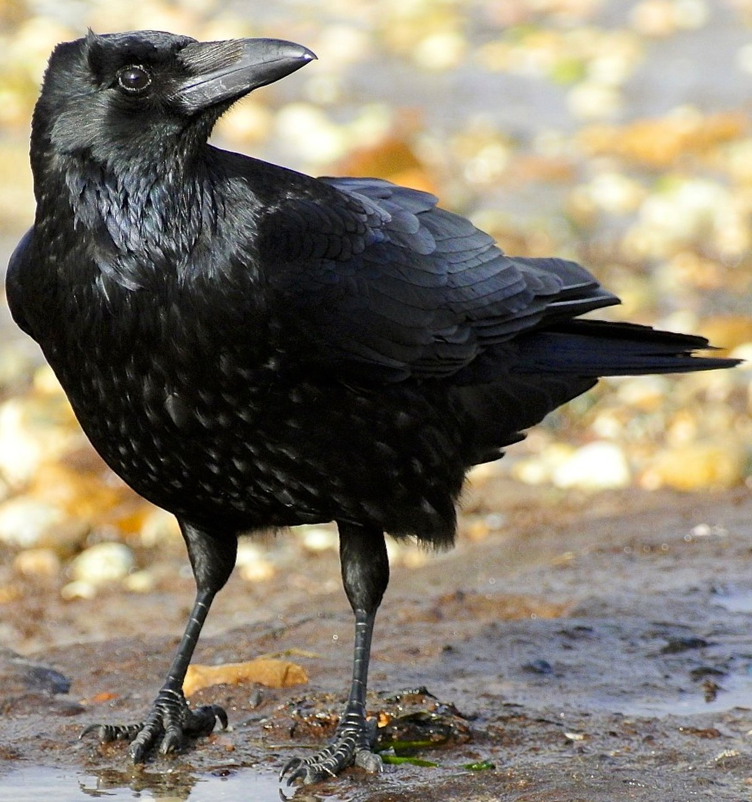

CROW

Interesting fact:
The animal is very inteligent
Common traits:
Mostly black feathers
Short description: The crow, a highly intelligent and adaptable bird, is
characterized by its sleek black plumage and distinctive cawing. Known
for its resourcefulness, crows are often associated with symbolism in
various cultures. With keen problem-solving skills, these birds thrive
in a wide range of environments, displaying both communal and
individualistic behaviors. Crows play a crucial role in ecosystems,
scavenging for food and contributing to the balance of nature. Their
striking appearance and complex social structures make them fascinating
subjects for observation and study.